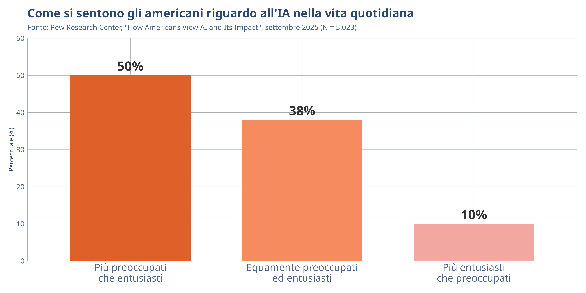

Introduzione all’IA Generativa
IA Generativa e Media — Settimana 1
DISCUI · Università degli Studi di Urbino Carlo Bo
23 febbraio 2026
Roadmap della lezione
- Presentazione del corso — struttura, regole, valutazione
- Che cos’è l’IA generativa — definizioni e concetti fondamentali
- Evoluzione storica — dagli algoritmi ai modelli di linguaggio
- Panoramica tecnologica — GPT, DALL-E, Gemini, Stable Diffusion
- Il Paradosso dell’IA Generativa — fiducia e verifica
- Prossimi passi — letture e preparazione
Presentazione del Corso
Il corso in sintesi
| Insegnamento | IA Generativa e Media (6 CFU) |
| Docente | Prof. Fabio Giglietto |
| Durata | 23 Febbraio – 1 Aprile 2026 (6 settimane) |
| Orari | Lun/Mar 11:00–13:00, Mer 14:00–16:00 |
| Piattaforma AI | Google Gemini + NotebookLM |
| Accesso | Account @uniurb.it richiesto |
Panoramica del corso
- Tre incontri a settimana (LUN e MAR dalle 11 alle 13, MER dalle 14 alle 16)
- Durata totale: 18 incontri × 2 ore = 36 ore
- Struttura del corso:
- Parte I — Lezioni frontali e seminari: settimane 1–3 (9 incontri)
- Parte II — Progetto di gruppo: settimane 4–6 (9 incontri)
Struttura delle 6 settimane
| Settimana | Focus |
|---|---|
| 1 | Fondamenti dell’IA generativa |
| 2 | Produzione, disinformazione e regolamentazione |
| 3 | Seminario ospite: IA e comunicazione politica (Bruna Paroni) |
| 4 | Lancio progetto e raccolta dati |
| 5 | Analisi assistita dall’IA e validazione |
| 6 | Scrittura e sintesi del corso |
Ospiti e seminari
| Data | Ospite | Tema |
|---|---|---|
| 3 Marzo | Vincenzo Cosenza | Intelligenza Aumentata — Esercizi pratici per collaborare con l’IA |
| 9–11 Marzo | Bruna Paroni | IA Generativa e Comunicazione Politica — Seminario (6 ore) |
| 16 Marzo | Massimo Terenzi | Dall’AI Slop alla Viralità Strategica — Ricerca su Facebook Italia |
Modalità di valutazione per frequentanti
- È considerato frequentante chi risulta iscritto allo spazio blended entro giovedì 26 Febbraio, partecipa ad almeno ¾ delle lezioni (14 su 18) e al lavoro di gruppo
- Il voto dell’attività di gruppo vale il 75% della valutazione finale (max 23,25)
- Il 10% (max 3,1) dalla partecipazione dello studente (n. lezioni frequentate)
- Il restante 15% (max 4,65) dipende dalla valutazione del colloquio orale
- Il colloquio consiste nella discussione del progetto di lavoro
- Gli studenti non frequentanti sosterranno l’esame studiando i libri di testo in programma
Rilevazione delle presenze
- Aprire l’app UniUrb Stud (o uniurb-pwa.app.cineca.it)
- Cliccare su Rilevazione Frequenze → Marcatura
- Autorizzare la geolocalizzazione (la prima volta)
- Inserire il codice visualizzato nel footer di queste slide
- Verificare nello Storico presenze
Attenzione
Il codice appare automaticamente in basso su queste slide durante la lezione. Si ricorda che una falsa attestazione di presenza potrà essere soggetta a provvedimenti.
Policy per giustificare le assenze
- La partecipazione (n. lezioni frequentate) è parte integrante del sistema di valutazione
- Ogni lezione frequentata vale circa 0,17 punti
- Le assenze per validi motivi opportunamente giustificate sono considerate come lezioni frequentate
- Per giustificarsi: postare, entro 2 giorni dall’assenza, nel “Forum per le giustificazioni” dello spazio blended giustificando l’assenza e specificando i motivi
Policy per Generative AI
L’uso degli strumenti di Generative AI (ChatGPT, Gemini, Le Chat, Claude, etc) è consentito come supporto al brainstorming (“Dammi qualche idea su…”) e alla critica di un testo originale prodotto dallo studente (“Correggi la sintassi…”, “Critica le argomentazioni…”)
Ogni uso meramente sostitutivo (“Scrivi un paragrafo su…”) è vietato
L’uso va dichiarato nella relazione specificando quale strumento è stato utilizzato
Spazio blended
I materiali del corso (incluse queste slides), il forum per le giustificazioni e le esercitazioni verranno resi disponibili sullo spazio blended del corso.

Suggerimento
Iscrivetevi allo spazio blended entro giovedì 26 Febbraio per risultare frequentanti.
Attività interattiva
Compilare il modulo di feedback che abbiamo preparato nel blended.
Che cos’è l’IA Generativa?
Definizione
IA Generativa: sistemi di intelligenza artificiale in grado di creare contenuti originali — testo, immagini, audio, video — a partire da modelli addestrati su grandi quantità di dati.
A differenza dell’IA analitica (che classifica o prevede), l’IA generativa produce artefatti nuovi.
Concetti chiave
| Termine | Definizione |
|---|---|
| LLM (Large Language Model) | Modello addestrato su miliardi di testi per generare linguaggio |
| Modello di diffusione | Genera immagini partendo da rumore casuale |
| Prompt | Istruzione testuale fornita al modello |
| Hallucination | Contenuto generato plausibile ma falso |
| Token | Unità minima di testo elaborata dal modello |
Come funziona un LLM (semplificato)
- Addestramento — il modello legge miliardi di testi dal web
- Apprendimento di pattern — identifica relazioni statistiche tra parole
- Generazione — dato un prompt, predice la sequenza più probabile
- Fine-tuning — viene raffinato per seguire istruzioni e dialogare
Concetto chiave: Un LLM non “capisce” il linguaggio. Calcola la probabilità della parola successiva basandosi sui pattern appresi.
I tipi di contenuto generativo
Testo
- Articoli, riassunti, traduzioni
- Codice, email, post social
- Strumenti: ChatGPT, Gemini, Claude
Audio
- Voci sintetiche, cloni vocali
- Podcast generati automaticamente
- Strumenti: ElevenLabs, NotebookLM Audio
Immagini
- Foto realistiche, illustrazioni, arte
- Editing e manipolazione
- Strumenti: DALL-E, Midjourney, Imagen
Video
- Scene generate da testo
- Deepfake e face swap
- Strumenti: Sora, Runway, Kling
Evoluzione Storica
Dalla regola alla generazione
| Periodo | Sviluppo | Impatto |
|---|---|---|
| 1950-1960 | Test di Turing, ELIZA | Prime interazioni uomo-macchina |
| 1980-2000 | Reti neurali, sistemi esperti | Applicazioni limitate a domini specifici |
| 2014 | Generative Adversarial Networks (GAN) | Prime immagini sintetiche realistiche |
| 2017 | Architettura Transformer | Rivoluzione nei modelli linguistici |
| 2022 | ChatGPT (OpenAI) | IA generativa diventa mainstream |
| 2025-2026 | Agenti IA, modelli di ragionamento | Open source competitivo, contesti da 1M+ token |
Il momento ChatGPT
Novembre 2022: OpenAI rilascia ChatGPT. In due mesi raggiunge 100 milioni di utenti attivi, diventando l’applicazione con la crescita più rapida nella storia.
Questo lancio ha trasformato l’IA generativa da tecnologia di nicchia a fenomeno culturale e sociale, con implicazioni profonde per:
- Il giornalismo e la produzione di notizie
- La circolazione dell’informazione online
- La fiducia pubblica nei contenuti digitali
Il panorama attuale (febbraio 2026)
| Modello | Azienda | Tipo | Caratteristica |
|---|---|---|---|
| GPT-5 | OpenAI | Multimodale | Ragionamento avanzato, 200K contesto |
| Gemini 3 | Google DeepMind | Multimodale | 1M contesto, integrato in Workspace |
| Claude 4 | Anthropic | Multimodale | Eccelle in coding e scrittura, 1M contesto |
| Llama 4 | Meta | Testo (open) | Contesto fino a 10M token, open source |
| Midjourney v7 | Midjourney | Immagini | Alta qualità artistica |
| Sora 2 | OpenAI | Video | Generazione video da testo |
L’IA Generativa e il Sistema Mediale
Percezioni pubbliche dell’IA
I rischi percepiti
“Il rischio più alto dell’IA è l’erosione delle capacità umane — come la perdita delle competenze di pensiero critico.”
— Rispondente, Pew Research Center, 2025
I principali rischi indicati dal 57% degli americani che considerano i rischi dell’IA “alti” (Pew Research Center, 2025):
- Erosione delle capacità umane (pensiero critico, creatività)
- Perdita di posti di lavoro e trasformazione economica
- Accuratezza dell’informazione e disinformazione
- Sorveglianza e perdita di privacy
Il riconoscimento dei contenuti IA
L’importanza percepita
Il 76% degli americani ritiene importante essere in grado di riconoscere contenuti generati dall’IA.
La capacità effettiva
Solo il 47% si dichiara in grado di distinguere contenuti generati dall’IA da quelli creati da esseri umani.
Il gap della detection: La maggioranza ritiene cruciale riconoscere l’IA, ma oltre la metà ammette di non saperlo fare (Pew Research Center, 2025).
Il Paradosso dell’IA Generativa
Il Paradosso dell’IA Generativa: man mano che i contenuti sintetici diventano onnipresenti e indistinguibili, le società potrebbero razionalmente scontare tutte le prove digitali. La verifica diventa un privilegio, i processi istituzionali rallentano, e la responsabilità si erode (Ferrara, 2026).
La Realtà Sintetica: un modello a strati
| Livello | Nome | Descrizione |
|---|---|---|
| 1 | Contenuto sintetico | Testo, immagini, audio, video generati |
| 2 | Identità sintetica | Persone fittizie con documenti, voce, volto |
| 3 | Interazione sintetica | Dialoghi e persuasione adattiva automatizzata |
| 4 | Istituzioni sintetiche | Corruzione dei processi di verifica istituzionale |
Adattato da Ferrara (2026)
IA e persuasione politica
Risultato chiave: In conversazioni di circa 9 minuti, i sistemi IA più avanzati sono risultati fino al 52% più persuasivi di un messaggio statico, con effetti misurabili ancora dopo un mese (Hackenburg et al., 2025).
Ma c’è un trade-off preoccupante:
- I modelli ottimizzati per la persuasione producono più affermazioni inaccurate
- Il modello più persuasivo conteneva il 30% di claim inaccurati
- Le strategie basate su densità informativa sono le più efficaci
Verso il Sistema Mediale Ibrido
Dal broadcasting all’IA
Media tradizionali
- Flusso uno-a-molti
- Gatekeeping professionale
- Verifica editoriale
- Ciclo di notizie definito
Sistema mediale ibrido + IA
- Flusso molti-a-molti + IA
- Gatekeeping algoritmico
- Contenuti generati automaticamente
- Ciclo informativo continuo
“Il sistema mediale ibrido è costruito sulle interazioni tra vecchi e nuovi media e le loro tecnologie, generi, norme, comportamenti e organizzazioni associate.”
— Chadwick (2011)
Il giornalismo nell’era dell’IA
L’IA generativa sta trasformando ogni fase della catena del valore giornalistica (Mattis & Vreese, 2025):
- Raccolta: automazione delle fonti, monitoraggio in tempo reale
- Produzione: articoli generati, editing automatizzato
- Verifica: strumenti IA per il fact-checking, ma anche nuove sfide
- Distribuzione: personalizzazione algoritmica, chatbot informativi
Qualità percepita vs. disponibilità a leggere
Risultato sorprendente: I lettori valutano la qualità degli articoli generati dall’IA come equivalente a quella degli articoli umani, ma restano riluttanti a leggere notizie prodotte dall’IA (Gilardi et al., 2025).
- Nessuna differenza significativa su credibilità, competenza e leggibilità
- Solo il 29% degli svizzeri leggerebbe notizie completamente generate dall’IA
- La resistenza non dipende dalla qualità ma da fiducia e autenticità
Sintesi e Prossimi Passi
Concetti chiave di oggi
- L’IA generativa crea contenuti originali (testo, immagini, audio, video)
- I LLM predicono sequenze probabili; non “comprendono” il linguaggio
- Il Paradosso dell’IA Generativa: utilità crescente, fiducia decrescente
- La realtà sintetica opera su 4 livelli: contenuto, identità, interazione, istituzioni
- Il gap tra importanza percepita (76%) e capacità effettiva (47%) di riconoscere l’IA
- La qualità dei contenuti IA è equiparabile a quella umana, ma la fiducia resta bassa
Letture per questa settimana
Obbligatorie
Suggerimento
Portate le letture al workshop di mercoledì: le caricheremo su NotebookLM per un esercizio pratico.
Per la prossima lezione
Domani (Martedì 24 Febbraio): Il Sistema Mediale Ibrido nell’Era dell’IA
- Il framework di Chadwick: vecchi e nuovi media in interazione
- Come l’IA si inserisce nel sistema mediale ibrido
- Trasformazioni delle professioni della comunicazione
Mercoledì 25 Febbraio: Workshop pratico su Google Gemini e NotebookLM
Attenzione
Verificate oggi stesso il vostro accesso a Google Gemini e NotebookLM con l’account @uniurb.it. In caso di problemi, contattate il supporto IT.
Grazie!
Prossima lezione: Il Sistema Mediale Ibrido (24 Febbraio 2026)
📧 fabio.giglietto@uniurb.it
🌐 blended.uniurb.it
Riferimenti

IA Generativa e Media · A.A. 2025/2026